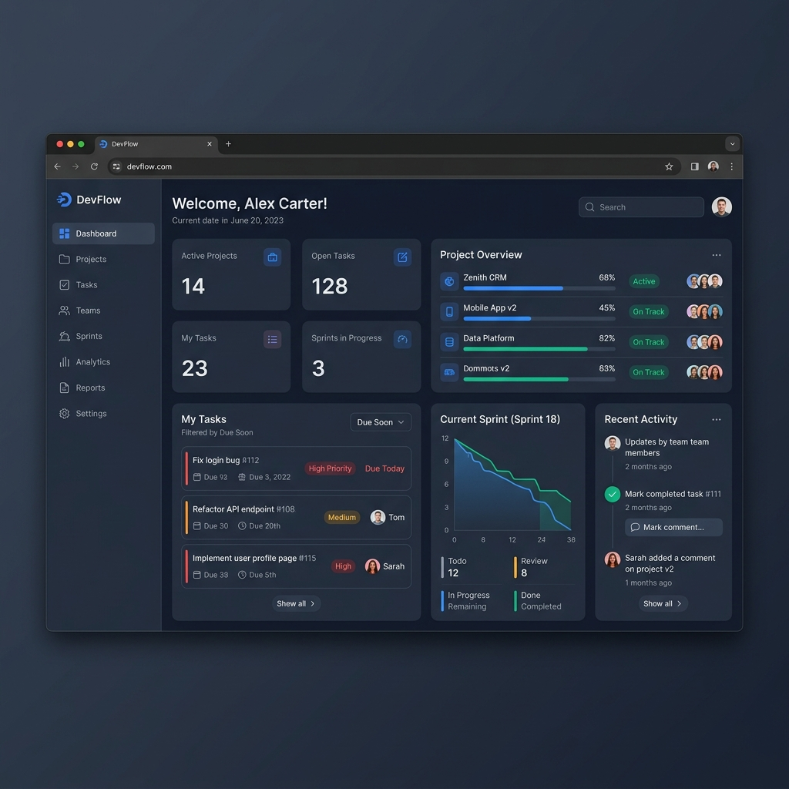

Sobre Mí
Soy una desarrolladora apasionada por la tecnología con un gran foco en la mejora continua y el aprendizaje rápido. Recientemente he completado un bootcamp intensivo de desarrollo de software donde adquirí sólidas bases técnicas y experiencia práctica construyendo proyectos reales. Me considero una persona proactiva y con gran tolerancia a la frustración, lista para enfrentar nuevos desafíos y aportar valor en un equipo dinámico.
Mis Proyectos
GestorPro
Aplicación web full-stack para la gestión eficiente de proyectos y tareas con autenticación y panel de administración.
Python Django BootstrapAlkeWallet
Billetera virtual desarrollada para gestionar transacciones, saldos y usuarios de manera segura.
Base de Datos BackendProyecto Blog
Plataforma de publicación de artículos con gestión de contenido y comentarios.
Desarrollo Web FrontendCaso de Estudio Destacado: GestorPro

Breve descripción
GestorPro es un Task & Project Manager, una aplicación web full-stack desarrollada con Django. Permite a los usuarios registrarse, autenticarse y organizar su flujo de trabajo a través de una interfaz moderna y responsiva.
Desafío principal
El mayor reto fue implementar un sistema de seguridad y permisos robusto que garantizara que cada usuario solo pudiera ver y modificar sus propios proyectos y tareas, integrando además funcionalidades de recuperación de contraseñas y un panel de administración personalizado.
Solución propuesta
Utilicé validaciones nativas de Django, protección CSRF y Mixins (`LoginRequiredMixin`, `UserPassesTestMixin`) para el control de acceso. Para el frontend, apliqué Bootstrap 5 para crear una interfaz "Split-Screen" y tarjetas interactivas que mejoran la experiencia de usuario (UX).
Herramientas técnicas utilizadas
Python 3.8+, Django Framework, SQLite, Bootstrap 5.3, HTML5, CSS3, Git.
Principales aprendizajes
Consolidé mis conocimientos en el patrón MVT (Modelo-Vista-Template) de Django, el manejo avanzado de consultas a bases de datos relacionales mediante el ORM, y la importancia de escribir código limpio y seguro. Además, aprendí a integrar diseños UI/UX modernos en aplicaciones backend.
Habilidades aplicadas
Desarrollo Full-Stack, Diseño de Base de Datos, Autenticación y Autorización, Diseño UI/UX responsivo, Resolución de problemas.